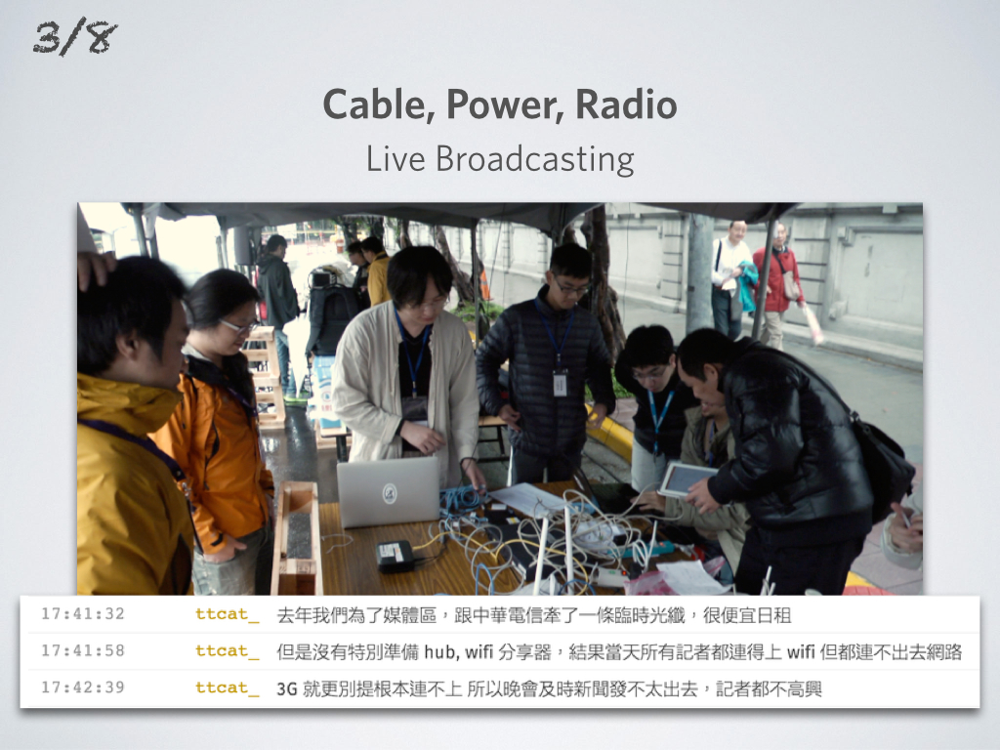
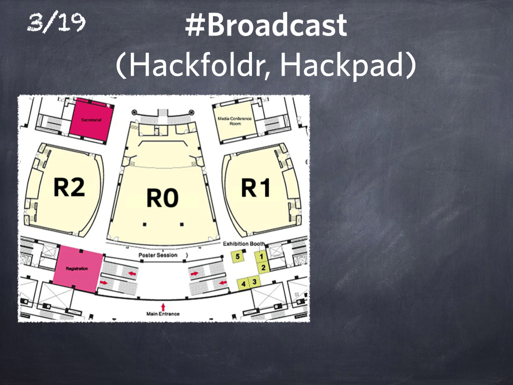
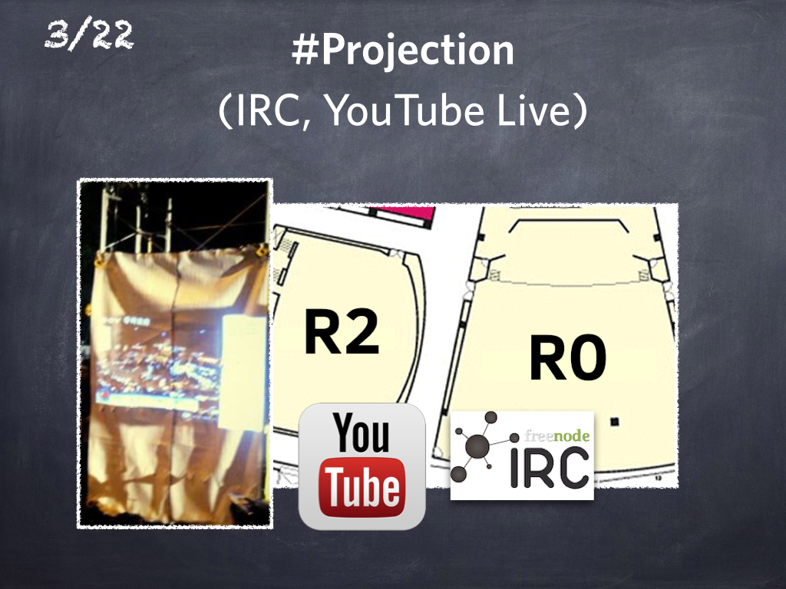
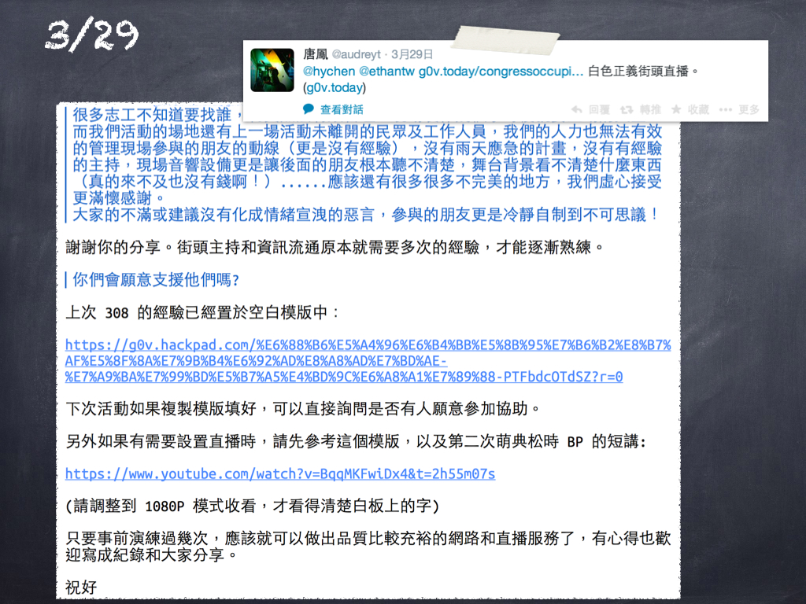
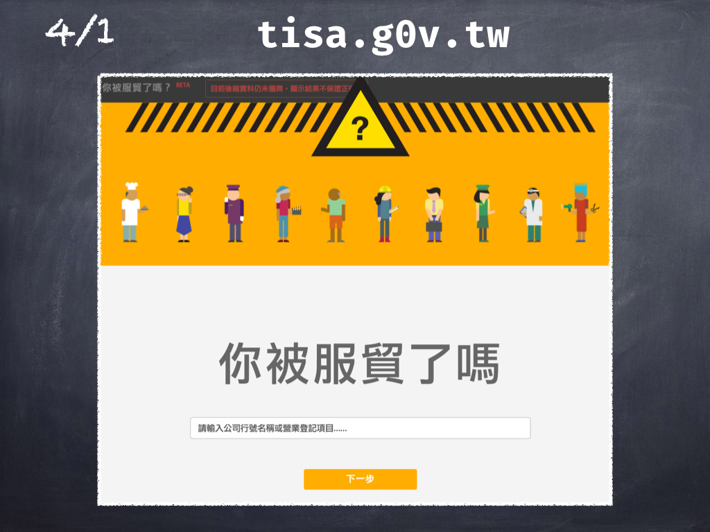
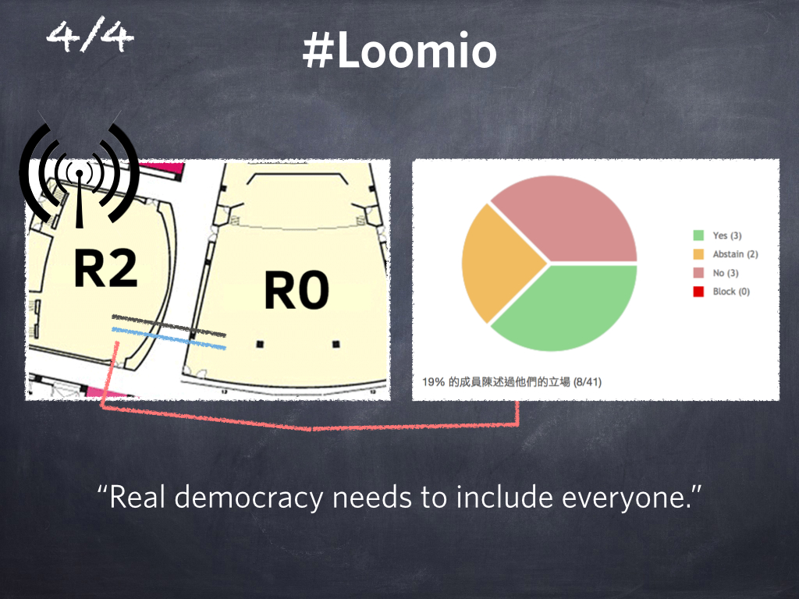
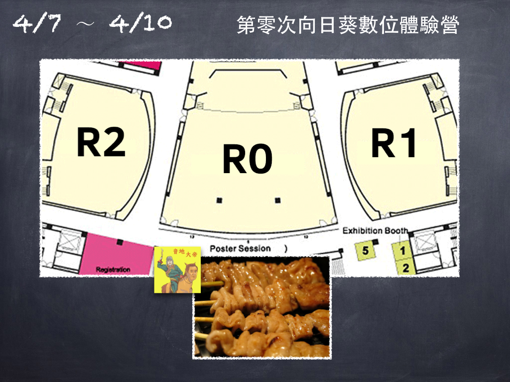
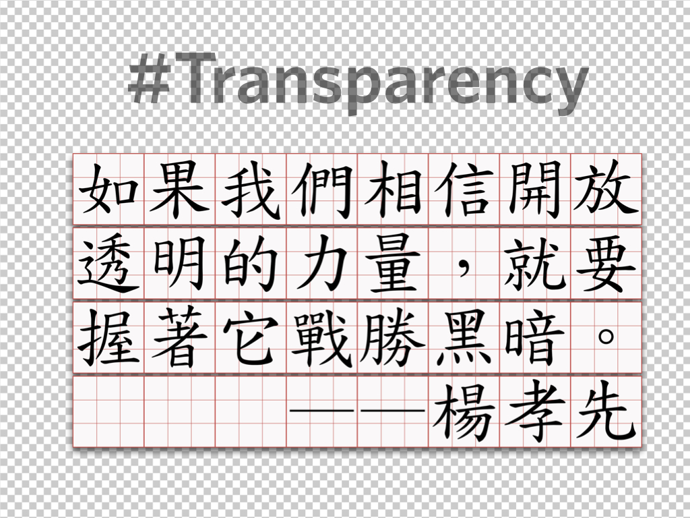

第零次向日葵數位體驗營 [逐字稿]
…以上就是[零時政府的]第一年。
今年 3 月 8 日，我們被找去支援反核四遊行。
一年前，有個同樣訴求的大遊行在相同地點舉行，主辦方租了一條 HiNet 寬頻網路，但因為沒有技術支援，所以線路超載了，大家都無法上網。媒體和記者都沒辦法即時發佈新聞，他們因此不太高興。
所以今年主辦方請 g0v 幫忙，我們所做的，就是把家用 AP 帶來，重新設定 AP 以確保連線，然後買了 20 顆 USB 有線網卡，這樣無線頻譜不夠的問題就解決了。可是因為天氣很差，媒體差不多只來了十個人，所以頻寬就太多了，大概還多出 50Mb。該怎麼利用呢？
我們想說，或許可以提供網路連線，給在場的約一萬人，但我們的 AP 是家用等級的，沒辦法撐這麼多人，所以我們就利用多出來的頻寬，把舞台上的畫面和聲音，高畫質直播到 YouTube 上面。
雖然事前沒有告訴大家有直播，但很多人還是來看了，事實上比站在舞台正前方的觀眾還多。似乎，我們可以提供「遠端參與」現場運動的機會。
後來我們討論了一些改進的方法，本來打算在 OSDC 做個 demo，可是後來沒有發生，我馬上就會解釋為什麼...

我們先來看這張文氏圖。3 月 18 日在立法院附近有另一場遊行，起因是當局認為和外國簽定的貿易條約是外交事宜，但卻不適用於中國，因為憲法規定，中國是台灣的一部份 (並且，中國在憲法上也認為台灣是中國的一部份... 但我想這不是同一回事...)
因為在憲法上，兩岸關係有一大堆模糊地帶，因而立法院沒有合法的方式，可以審查任何與中國簽訂的貿易條款。那一天[張慶忠在委員會]強制通過了[一讀]，讓很多人非常在意，因為，如果立法院都不審查的話，行政部門就可以依法炮制和中國簽訂任何東西。
因此當晚有一場非常大的抗議活動。我決定去支援直播。我到場的時候帶了 WiMax 和一張影像擷取卡，然後發現有一個比我專業太多的人已經在那裡了，他帶了桌機、影像擷取卡和直播軟體，他就是音地大帝。
可是他不知道怎麼設定 YouTube Hangout，也不知道怎麼把桌機連上無線網路，所以他把 DV 和音源線都接好了，但訊號就是送不出去，他手機的 3G 連線也不夠快。
所以我把手機借他，我有比較快的 3.5G 連線，但是卻沒辦法讓音地的桌機用 USB Wifi 上網。我們有網路、有直播，可是不能把兩樣接在一起。
然後有個年輕的學生經過，他說「嘿，我的筆電借你用，這是 Administrator 帳號」(我想上面跑的是 WinXP...) 「我可以借你一整晚。」
那時候，我還不知道為什麼他的電腦可以借我一整晚。
「筆電就交給你了，你要做什麼都可以，不好意思我的桌面超亂的。」這位[黑島青的]學生和我說。
透過這台筆電，我接上我手機上的無線網路，然後用 XP 的網路分享，透過網路線接到音地的電腦，於是當晚的即時影音直播就開播了。

我清楚記得那個時候，這三塊 (公民媒體、自由軟體、社運團體) 一起往中間靠了一點，於是就發生了非常有趣的事情。
為了保護當事人，接下來我要講的其實不是立法院發生的事，而是中研院發生的事情。

在 3/19 那天在中研院，七樓的黃老師跟一些其他人辦了第零次向日葵數位體驗營，地點就是在人社館我們現在 [OSDC] 這邊，有 R0、R1 和 R2 [會議室]。
音地那時候在 R1，還在直播外面的晚會。就在 [R0] 這邊，後面大概第五排的位置，有人用一雙拖鞋夾住 iPad 來直播。我們一些 g0v 的朋友，就架了一些 Webcam，把中研院的這個營隊放到 Hackfoldr 上面，大家一起用 Hackpad 來共筆這件事情。

不知道為什麼，很多人關心這個營隊，所以 Hackpad 就... [全場大笑鼓掌] …就刷卡增加設備來支援我們，文播組就是在那個時侯成立的。

一開始這其實不叫向日葵營隊，好像是因為 3/19 早上，R1 的人幫 R0 的人架了 MediaWiki。我們知道 MediaWiki 的 Logo 是一朵向日葵，所以後來就叫做向日葵營隊。[全場笑]
3/20 我們在營隊主要做的事情，是成立了後勤和物資組。因為 R0 很多人要訂便當，有素便當、葷便當之類的， 很難統整。所以就用 Google Form 跟 PTT 置底文的方式，大家只要在 Google Form 上填自己需要什麼，就會有人送過來，很奇妙的。

然後 3/20 也有很多 g0v 的朋友到了 R2。雖然 R2 和 R0 中間只有一點點距離，我們還是架了強力的指向型天線，想要把 WiMax 的訊號打進 R0 裡面，讓裡面的 iPad 可以繼續做下來。

到了 3/21 我們就發現 3G 的頻寬跟裡面 2.4Ghz 的頻寬都已經滿了，主要是因為中研院自己有強力的 Cisco 基地台。所以說... [全場大笑] 我們就帶了二十幾條 USB Ethernet Jack 進去給 R0 的營隊使用。
在這整個佈線完成之前，大家都是用 WiMax。我們就自己開了一個 Hackfoldr，叫做 Network，用 Google Docs 的方式，來更新拓樸圖這類的。
到了 3/22，就發生了一些事情。因為 R0 裡面的門不知道為什麼卡住了，然後 R2 有人聽說 R0 裡面的人不小心被拍肩膀受傷了，就很急想要衝進 R0 裡面去... [全場笑] 但因為國際會議廳出入不是很方便，所以就有一位穿外套的同學出來，說我們在裡面其實沒事。
那位同學後來，我們就討論了一下，如果 R2 有個布幕可以用很克難的方式和投影設備，讓大家可以知道 R0 發生什麼事，是不是比較好呢。
所以除了 Hackpad 的文播組之外，在 R0 裡面有一位中打可以到每分鐘 120 字，而且可以五隻手指每次用三隻輪流打還是可以一分鐘 120 字的同學，我們就幫他開了一個 IRC Channel。從此之後，除了外面聽廣播的文播組之外，裡面也多了一個內場的文播組，打的字就直接秀在投影幕上面，讓 R2 的人知道營隊一切順利。

到了 3/23，就是萌典松的時候，我們註冊了一個... 其實本來就己經註冊了，就是把[網域]設定改成用 g0v.today 的方式，讓大家可以看到所有的直播，也包括英譯組的同學這樣。
也是在那一天，因為大法官釋憲，說在中央研究院附近散步是合法的... [全場大笑] 所以我們就趕快去申請了 HiNet。當然那時候 HiNet 沒有那麼快下來啦。

但很不幸的是 3/24 中研院就跳電了。一片漆黑，那是最黑暗的一天。不止是辦營隊的朋友，同時 EtherCalc 也被攻擊，然後 g0v.hackpad.com 也連不上。過了大概一個多小時之後，就恢復了。
恢復之後我們就瞭解到，本來用 WiMax 這種方式實在是不可取。剛好那天 HiNet 不知道為什麼瞬間就架好了，一般要三到五天的。大概他們也很想看直播... [全場笑]

所以我們就拉了好幾條線，我就拿了 350 米的 CAT-6 線去。其實走廊這麼短，為什麼要 350 米，總之... [全場大笑鼓掌] 我們就把 R0、R1 和 R2 整合成同一個 LAN 了。
那時候有 3621 位 PTT 的鄉民，不知道為什麼買了廣告，要大家來看 g0v.today。其實網站是跑在萌典的那台小 Linode 上面，並不是設計用來給二十萬人一起看的。

所以我就趕快連夜把 EtherCalc 改成用 GitHub Pages，然後讓 Fastly CDN，就是 GitHub Pages 用的 CDN，來承受它的流量，然後這樣就挺住了。

到了 3/26，我們就覺得說，既然大家都拿著 iPad 在中研院附近跑來跑去，好像應該要保護他們一下。所以我們就製作了記者證，給 g0v 的朋友和所有其他的公民記者朋友。在記者證右邊寫上了大法官釋憲的原文，說任何公民記者都可以做這類的事情，不一定要屬於哪一個媒體。從那個時候開始，我們就成為自己的獨立媒體。

到了 3/27，我們就架了 123.g0v.today 網站，讓你可以找到自己立委的電話，然後打過去跟他們說「先立法，再審查」，來邀請他們一起參加營隊的這個動作。另外那天海纜斷掉了，所以我們想要從 YouTube 換成 justin.tv，他們也很願意幫忙，可是隔天海纜就恢復了，所以我還沒有回他們的信...

3/28 那天，又出現了工研院的團隊說「雖然你們已經架了五到十台的攝影機，但是還有很多死角，像中研院走廊上面這類的。」他們那天就架了六台攝影機，把每個角落都拍了下來。從那時候開始，就沒有再發生非常激烈的衝突或是暴力的事件，我們也是非常感謝他們，當然我們也分了相當多頻寬給他們使用。
後來我們也連絡到人，架了兩層樓高的[螢幕]，在 R2... 事實上後來 R1 也架了，讓大家可以即時用 1:1 等身比例去看到 R0 裡面發生的事情。後來 [R0 的投影機] 好像用來放 Kano 了... [笑] 無論如何呢，一開始這是用來看直播的。
3/29 有另外一批朋友，想要在中研院門口辦活動。然後他們都穿白色的衣服，不知道為什麼... [全場笑] 他們就問說，我們可不可以支援直播。我們的直播組也真的跑過去了，因為我們是中立的，他們有活動我們就這樣做。後來他們也來後勤問說「其實我們是第一次辦活動，有各種各樣的問題，你們可不可以指教一些」這樣。我們就把上次 [308] 活動的經驗建置在空白模版裡面，然後也把萌典松裡講到我們怎麼設置直播的東西，都教給了他們... 聽說他們後來的活動，有辦得稍微好一點點。

但是 3/30 又發生了很大的另外一場活動。這場活動跟上次 25 萬人在凱道比較大的不同是，每隔 400 公尺就有一個比較大的螢幕，事實上是每 400 公尺一個演唱會的情況，也就是用我們剛才講的直播的方式來處理的。

到了 3/31 遊行過了之後，R0 雖然繼續營隊，但是 R1、R2 的人就慢慢散掉了。我們就想說怎麼辦呢，我們不如就來提供在 308 時沒有提供的「路人松」，就是給過路人士使用的無線網路。這是很複雜的一個設定，我們用 pfSense 做了限流之類，規劃起來希望更多人可以在那邊辦更多的營隊。
4/1 的時候推出了一個很有趣的界面 tisa.g0v.tw，開發了八個月，可以讓你打入公司行號名稱或任何東西，就可以知道你是不是被服貿了。

4/2 之後，在 R1 的路人松就上線了，任何人都可以經過。剛好台大新聞所的朋友也在那邊辦營隊，就在我們棚旁邊，所以我們就把他們寫的新聞，跟我們這邊直播的新聞整合成一個界面，只要經過的人連上 g0v-public 就可以看到。

4/3 有人... 應該是村長... 做了 billab.io 的一個界面。之前「國會大代誌」只會顯示現有的法條和新提的法條，而現在還沒有提、還沒有付委的法條就可以在線上預覽，後來很多人用這個資訊去製做懶人包。
4/4 的 R2 路人松也啟動了，也是在同一個 LAN 上，於是我們就用 Loomio 線上民主的方式，來讓所有參加線路松的朋友，來決定下一步應該要怎麼做。

4/5 在 R1 有手語社的朋友在辦營隊... [笑] 他們把它叫做「公民制憲會議」，有「贊成」、「不確定」、「可不可以講快一點」之類的[手語]。我們就用文播和直播的方式，留下了整場的紀錄。

到了 4/6 我們就虛實整合，幫他們設定了 Loomio。而 Loomio 也非常有義氣的幫我們加了功能，讓手語社的紀錄，在日後可以放到線上的民主平台。

到了最後 4/7 的時候，大家看一看時間，發現 4/11 要開 OSDC，場地應該要還給 OSDC... [全場大笑鼓掌] 不能叫 OSDC 去別的地方開會嘛，這個先例是不能開的。所以說他們就把內場收拾得乾乾淨淨，然後我們就慢慢的撤退了。
這個時候，從一開始就在做直播的音地就沒事做了，他就跑去前面攤位那一側，跟在營隊開始之前就來了很久的長輩的攤位朋友們，去賣烤大腸了... [笑] 因為會議室裡面不能吃東西，所以他就去外面賣烤大腸，聽說賣得很好... [笑] 這大概就是營隊的一個過程。

在這裡面，其實對我，或是一起去做這些事的朋友，很重要的就是「網路中立性」這件事情。
我在支援直播晚會的時候，其實不知道有人要從 R1 翻牆到 R0。但是要連上牆裡和牆外，只有中立的網路可以做到。通訊可以減少衝突和誤會，我的本意就是這樣而已。
如果因為這樣的關係，很少人受傷，或是沒有人失蹤，有百分之一是因為我們做了這些事情，我覺得就很值得了... [全場鼓掌 30 秒]
最後一分鐘，我想說，我自己在這整個過程當中很感到高興的，就是一起參加的這些線路組、文播、直播、後勤... 所有的這些朋友們，一直到最後都沒有放棄 Transparency...
(...當然只有很宅的人才會把這個[畫面]看成透明的... [全場大笑])

我們都沒有放棄開放、透明的這個初衷。所有我們做的決定，雖然因為保護當事人的關係，剛剛地名有一些調整，但是我們所有做的經驗都可以整理出來，讓之後在中研院辦大型營隊的朋友... [笑]... 都可以使用。
長期推動網路中立性立法的孝先，有一句話我很喜歡。
他說「如果我們相信開放透明的力量，就要握著它戰勝黑暗」。
謝謝大家。
[全場鼓掌]